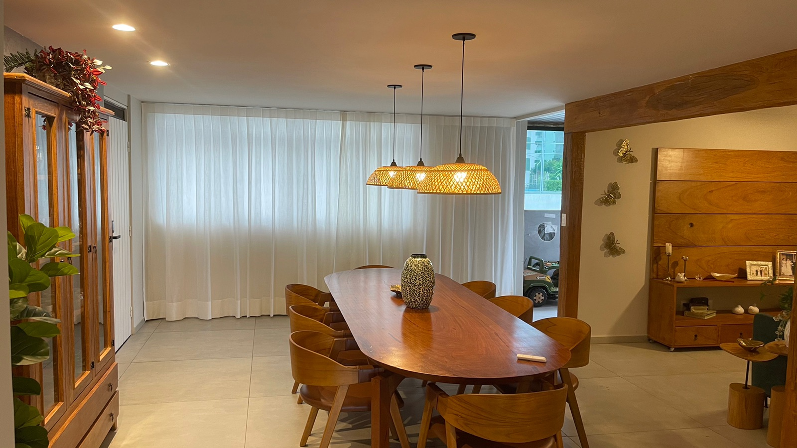
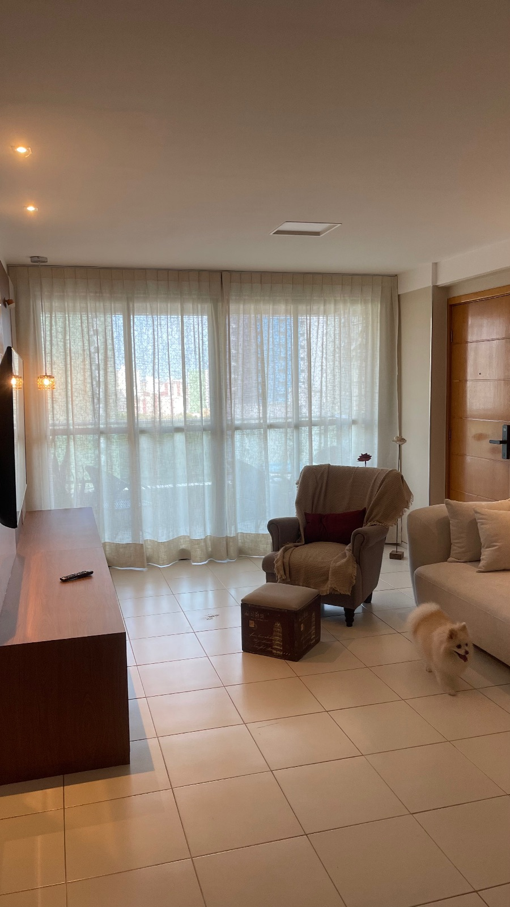

Encontre uma referência
Comece por um modelo, tecido ou tipo de luz que combine com o que você procura.
Tecidos, luz e medida
Cortinas e persianas para compor o ambiente com a leveza que você imaginou. Explore algumas referências e converse com a equipe sobre o seu espaço.


Uma referência para imaginar o seu espaçoPrimeiro, descobrir
Veja modelos e combinações no seu tempo. Depois, a conversa ajuda a entender o ambiente — e uma visita técnica permite conferir medidas e conhecer os tecidos de perto.
Entenda como funcionaSeleção demonstrativa
Explore os itens que aparecem no catálogo enviado pela JF Decor. Modelos sob medida, disponibilidade e valores devem ser confirmados com a equipe.
10 referências no catálogo
As fotos e descrições são referências do catálogo compartilhado. Confirme com a equipe os detalhes, a disponibilidade e os valores atuais.
Do primeiro olhar à medida certa
O atendimento pode começar pelo WhatsApp ou Instagram. Para conferir medidas e ver tecidos de perto, a equipe agenda uma visita técnica.
Conversar sobre meu ambienteComece por um modelo, tecido ou tipo de luz que combine com o que você procura.
A equipe conversa com você pelo WhatsApp ou Instagram para entender o ambiente.
Na visita técnica, medidas e tecidos podem ser vistos de perto antes de definir o projeto.
João Pessoa · PB
A Anna confirmou que a JF Decor atende hoje em uma única unidade no Centro de João Pessoa.
Um diretório público indica Rua Tenente Retumba, 150, sala 02, Centro. Endereço e ponto do mapa ainda precisam ser confirmados pela equipe antes de uma visita.
Ver busca do endereço no MapsUma boa escolha começa na conversa
Prévia conceitual · João Pessoa, Paraíba